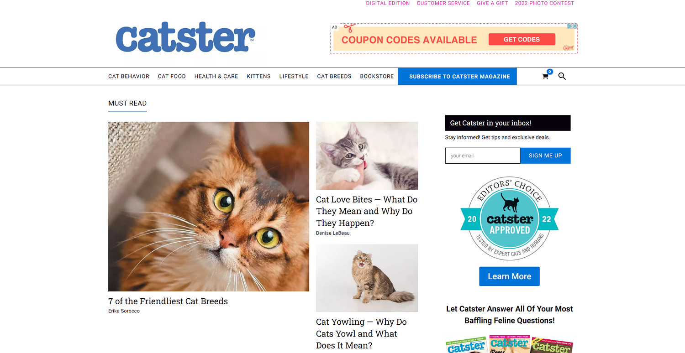
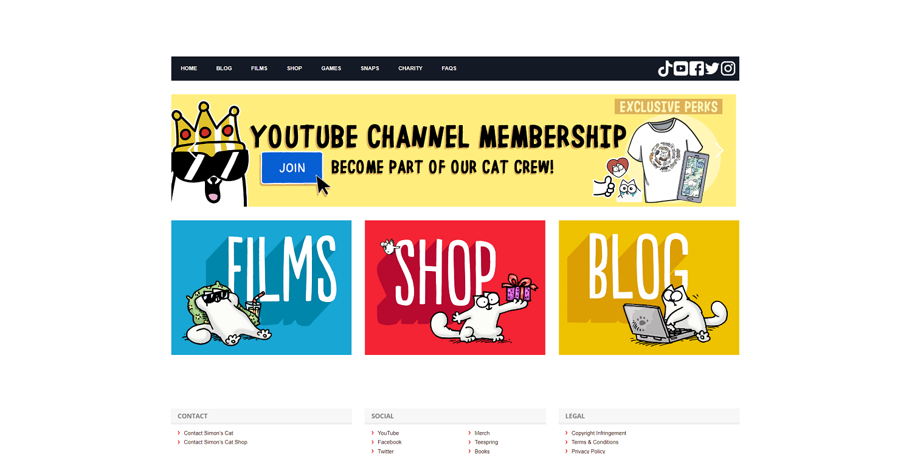
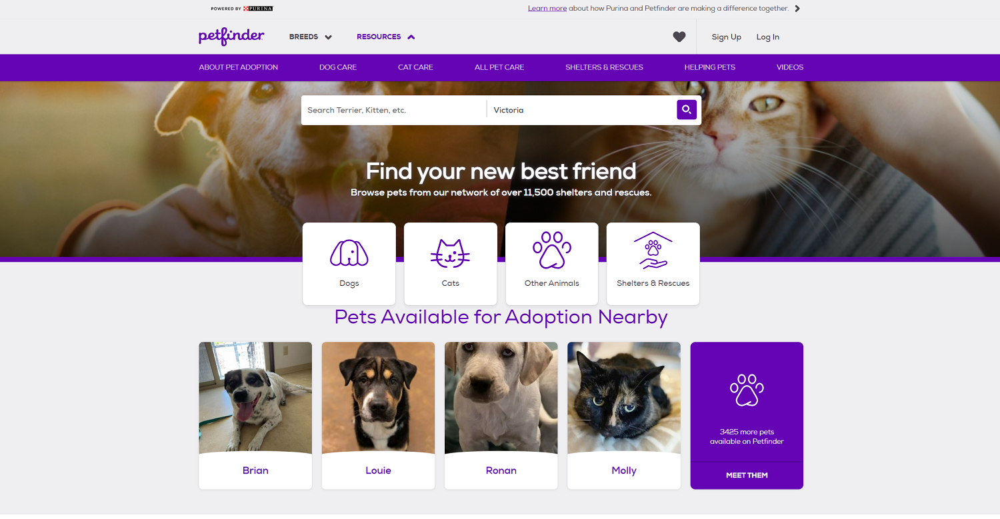

Cat Stuff Across the Web
Whether you're looking for tips on cat care, want to find a new cat to add to your family, or you're just looking for a good chuckle, there's a resource here that will be just what you're looking for.
-
Catster
Catster is an informative, entertaining website where you'll find everything related to cats, including articles about food, behavior, health, lifestyle, different breeds, and much more. You can subscribe to the magazine, but the content on the website is available for free, and is a great resource for all of your cat-related queries.
-
Simon's Cat
Simon's Cat is a comic book and video series created by British animator (and avowed cat lover) Simon Tofield. It features Simon's cat, harassing its owner while exhibiting all the usual cat behaviors. Simon's cat is beautifully portrayed, representing a cartoonish version of the domesticated feline. If your cat has ever sat on your chest and meowed at 3am, you will relate to this comic.
-
The Purrrcast
People love podcasts, and people love cats, so it only makes sense to combine the two. Hosts Sara Iyer and Steven Ray Morris, audio engineer for “My Favorite Murder,” talk to cat people because they can't talk to their cats.
-
Cat Simulator
Let's face it. Cats have it easy. If you've ever wanted to experience what it would be like to be a cat, this cat simulator game will let you give it a try. Game objectives include all the usual cat stuff: sneaking food, scratching stuff, catching mice, and much more. When you're done you're going to need a long nap curled up in a comfy armchair!
-
Petfinder
How many cats do you have? Do you need more? Petfinder is one of the many, many excellent resources to help you find your new best friend. Search for cats (or dogs, or ferrets, or whatever) near you. You'll find pictures, descriptions, and much more. Word of warning, even if you're not planning on welcoming a new cat into your life, 15 minutes on petfinder might be enough to change your mind.